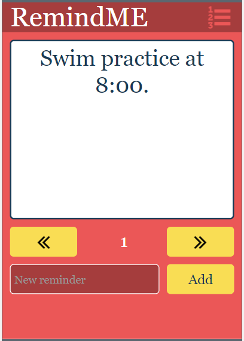
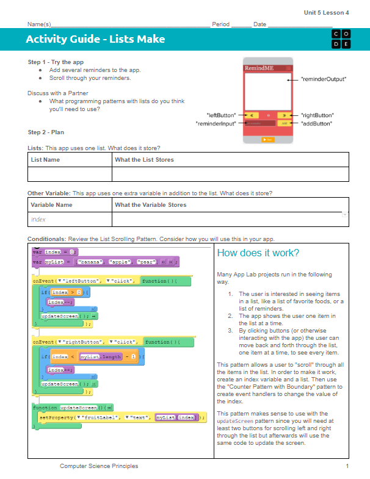

Today you will build an app on your own that stores reminders in a list and lets the user scroll through them.

Today you will write the code for RemindME, a reminder app. The screen is already designed for you.
The user types a reminder and clicks Add to save it. The arrow buttons scroll left and right through the saved reminders, one at a time.
Your code will store every reminder in a list, so the app works for two reminders or two hundred.
Open Lesson 4, Level 1 on Code.org and try the finished app.
Every element on the screen already has an id. Your code will use these names.
reminderOutputThe box that shows the current reminder
leftButtonScrolls to the previous reminder
rightButtonScrolls to the next reminder
reminderInputThe text box where the user types a new reminder
addButtonAdds the typed reminder to the list
This app uses one list and one extra variable. Fill in both tables on your activity guide before you start coding.
Stores every reminder the user has added, in order. It starts as an empty list, [], and grows by one each time the user clicks Add.
Stores the index of the reminder that is on the screen right now. The arrow buttons change it, and the list itself stays the same.

Use the activity guide to plan your code before you start building. Fill in the list and the variable tables, and read the List Scrolling Pattern.
Step 3 of the activity guide has steps you can follow to build the app, or you can use your own process.
Test as you go: add a few reminders, then scroll to both ends of the list and keep clicking.
Step 1Open Lesson 4, Level 1 on Code.org, then try the app and discuss it with a partner.
Step 2Plan your list and your index variable in the activity guide.
Step 3Build the Reminder App with the List Scrolling Pattern and an updateScreen function. If you get stuck, the debugging slide has hints below it.
Step 4Test adding and scrolling, then check the rubric before you submit.
When the app misbehaves, start from what you see and go to the part of the code that controls it.
index went past the end of the list. Check that the right button’s condition uses length - 1.
Check that the Add button sets index and then calls updateScreen.
Check that the id in onEvent matches the element exactly, and read any error in the console.
Stuck? Press the down arrow for hints: the List Scrolling Pattern, then step-by-step examples of the right button and the Add button.
This pattern lets a user scroll through a list one element at a time. It needs a list and an index variable.
Each button uses the counter pattern with a boundary. The if stops index at 0 on the left and at length - 1 on the right.
Both buttons then call updateScreen, which shows myList[index].
var index = 0;
var myList = ["banana", "apple", "pear"];
onEvent("leftButton", "click", function() {
if (index > 0) {
index--;
}
updateScreen();
});
onEvent("rightButton", "click", function() {
if (index < myList.length - 1) {
index++;
}
updateScreen();
});
function updateScreen() {
setProperty("fruitLabel", "text", myList[index]);
}Lines 3 to 6 are the right button’s click code. Here, console.log stands in for updateScreen.
What happens when index is already at the last element and the user clicks the right button again?
Lines 3 to 5 are one way to write the Add button’s click code. The user typed Call Grandma in the text box.
Check your app against the rubric before you click Submit on Code.org.
An onEvent is created for every required input.
A list and variables store every piece of information the app uses.
The program processes the list correctly for every button.
A function updates every output, and each onEvent calls it.
The screen always shows the current reminder.
No errors are present in the code.
Comments explain every onEvent and function.